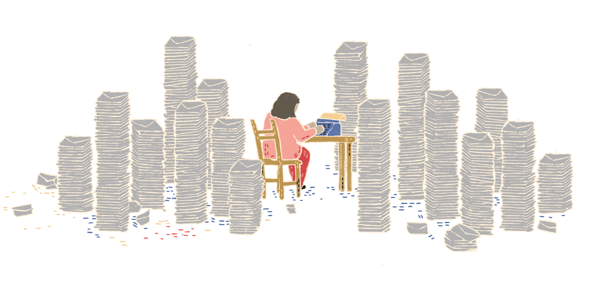

Navigating the Mental Health Landscape: A Global Perspective
by Amirah Hani (20000440), Yazmin Sunny (19001546), Farah Sofea (19001412)

— Explore global information on mental health issues while unveiling the personal confessions of individuals facing mental health disorders worldwide.
Global Mental Health Prevalence, 2019
High global prevalence of mental illness, affecting over 10% of populations in over half of the world's nations, reflects a universal human experience,
encompassing conditions like depression, anxiety, schizophrenia, bipolar, and eating disorders.
(World Health Organization, 2022)
Global Mental Health Prevalence (1990-2019)
Continuing from the detailed prevalence map provided earlier, a nuanced examination reveals
a consistent trend across multiple years and countries.
Notably, more than 50% of the prevalence is consistently attributed to depression and anxiety, underscoring the
pervasive nature of these mental health challenges.
Intriguingly, while eating disorders, schizophrenia, and bipolar disorders constitute a smaller proportion of the overall mental health landscape, their prevalence has remained
relatively stable over the years.
This suggests a persistent and perhaps overlooked aspect of mental health—a substantial number of cases appear to have not progressed towards recovery.
Comparative Analysis: Mental Disorders and Countries
This chart highlights the global burden of mental disorders,
revealing that some of the most prevalent mental disorders,
including major depressive disorder, anxiety disorders, and
substance use disorders, affect at least 66 countries each.
It is evident that Attention-Deficit / Hyperactivity Disorder (ADHD)
is prevelant in most of the countries as it is one of the most common
neurodevelopment disorders of childhood and often lasts into adulthood
(Center for Disease Control and Prevention, 2023).